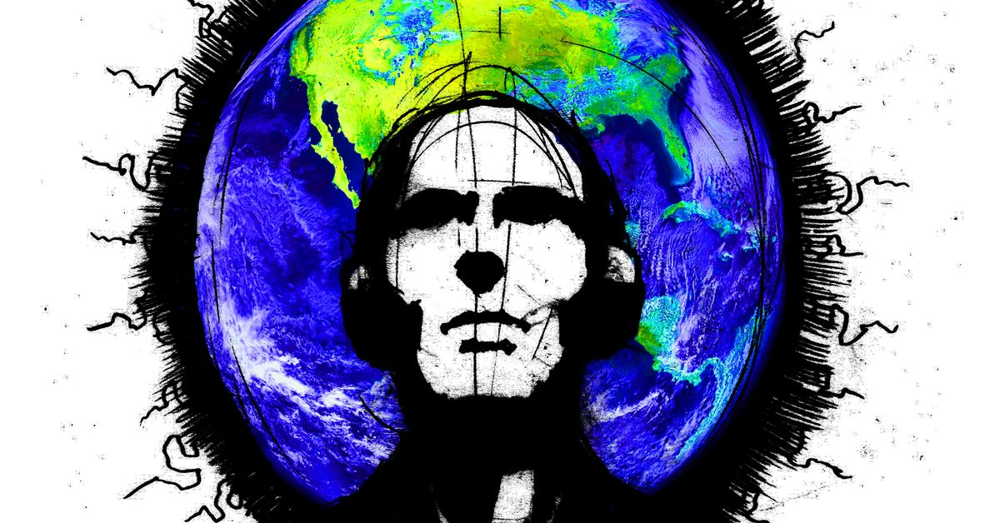

Servicios de DJ
¿Estás planeando un evento y necesitas un DJ para hacer que la fiesta sea un éxito? ¡No busques más! En nuestro equipo de DJ, ofrecemos una variedad de servicios que se adaptan a todo tipo de eventos, desde bodas hasta fiestas de cumpleaños, eventos corporativos y mucho más. Uno de nuestros principales objetivos es ofrecer una experiencia musical única y personalizada para cada evento. Nuestros DJs trabajan de cerca con los clientes para crear una selección de música personalizada que se adapte a sus gustos y necesidades. Si tienes alguna canción en particular que te gustaría escuchar durante la fiesta, ¡no dudes en hacérnoslo saber! Nos aseguraremos de incluirla en la lista de reproducción. Además de una selección de música personalizada, también ofrecemos un sistema de sonido de alta calidad que garantiza que la música se escuche clara y nítida en todo el lugar. Nuestro equipo de sonido está compuesto por los mejores equipos de audio del mercado, lo que nos permite proporcionar un sonido envolvente y de alta calidad. Por supuesto, también sabemos que la iluminación es un elemento clave para cualquier evento, y nuestros DJs ofrecen iluminación espectacular que complementa perfectamente la música y crea el ambiente adecuado para la ocasión. Ofrecemos diferentes opciones de iluminación, desde luces láser hasta luces LED y proyecciones de luz, que se adaptan a cada evento y espacio. Y si eso no es suficiente, nuestros DJs también pueden proporcionar efectos visuales que llevan la fiesta al siguiente nivel. Desde máquinas de humo hasta efectos de lluvia de confeti, nuestros DJs saben cómo sorprender y emocionar a la multitud. En resumen, nuestro equipo de DJ ofrece una experiencia musical completa y personalizada que se adapta a las necesidades de cada evento. Desde la selección de música personalizada hasta el sistema de sonido de alta calidad, la iluminación espectacular y los efectos visuales, estamos comprometidos a hacer que cada evento sea un éxito y una noche inolvidable. ¡Contáctanos hoy para reservar nuestros servicios de DJ para tu próximo evento!
- Selección de música personalizada
- Sistema de sonido de alta calidad
- Iluminación espectacular
- Efectos visuales
Nuestros DJs
Conoce a nuestros DJs expertos en música y entretenimiento:
-
DJ Xarux
¡Hola, hola, hola! ¿Están listos para una noche de fiesta épica? Entonces déjenme presentarles a nuestro DJ de la noche, ¡DJ Xarux! DJ Xarux es un maestro de la música electrónica que te llevará en un viaje alucinante a través de su música única y fascinante. Este DJ es conocido por su habilidad para fusionar diferentes géneros, desde el techno hasta el house y el electro, creando un sonido que es tanto innovador como emocionante. ¿Por qué DJ Xarux? Bueno, este nombre se inspira en la idea de que la música es una especie de lenguaje extraterrestre que nos conecta a todos. DJ Xarux es como un alienígena musical que desciende de las estrellas para llevarnos a un viaje que es tan emocionante como inexplorado. Además, DJ Xarux no solo es un nombre, sino una promesa. Este DJ se compromete a hacer que cada noche sea única y memorable, y a llevar a la multitud a lugares que nunca antes habían imaginado. Ya sea que esté tocando en un club, un festival o una fiesta privada, DJ Xarux siempre está listo para dar lo mejor de sí y llevar a la multitud a otra dimensión. Entonces, ¿están listos para dejarse llevar por la música de DJ Xarux? Si es así, ¡prepárense para una noche de fiesta como ninguna otra! ¡Vamos a explorar nuevos horizontes con DJ Xarux!
-

DJ Solaris
¡Buenas noches, amigos! ¿Están listos para una experiencia musical única? Entonces den la bienvenida a nuestro DJ de la noche, ¡DJ Solaris! DJ Solaris es un maestro de la música electrónica que te transportará a otro mundo con su música vibrante y llena de energía. Este DJ es conocido por su habilidad para fusionar diferentes géneros, desde el techno hasta el house y el trance, creando un sonido único e inolvidable. ¿Por qué DJ Solaris? Bueno, este nombre se inspira en la estrella más brillante de nuestro sistema solar. Al igual que el sol, la música de DJ Solaris es una fuente de energía y luz que ilumina y enciende a la multitud. Su presencia en la cabina es como una luz brillante que atrae a la multitud a bailar y disfrutar de la música. Además, DJ Solaris no es solo un nombre, sino una promesa. Este DJ se compromete a encender cada evento y hacer que cada noche sea especial y única. Ya sea que esté tocando en un club, un festival o una fiesta privada, DJ Solaris siempre está listo para brillar y hacer que la música sea el centro de atención. Así que, ¿están listos para dejarse llevar por la música de DJ Solaris? Si es así, ¡prepárense para una noche de baile, diversión y energía pura! ¡Vamos a encender la noche con DJ Solaris!
-

Ticket2Fly
¡Buenas noches, Querétaro! ¿Están listos para despegar a una noche llena de buena música y energía? ¡Entonces suban a bordo con Ticket2Fly! Ticket2Fly es el nombre de un DJ que está aquí para llevarte a un viaje musical inolvidable. Con su habilidad para mezclar diferentes géneros musicales y crear un ambiente emocionante y lleno de energía, Ticket2Fly es el piloto perfecto para tu noche de fiesta. ¿Pero por qué Ticket2Fly? Bueno, este nombre se inspira en la idea de que la música puede llevarte a lugares nuevos y emocionantes. Ticket2Fly es como el pasaporte que necesitas para experimentar la libertad y la emoción de la música. Ya sea que te guste el techno, el hip-hop o la música electrónica, Ticket2Fly tiene el boleto perfecto para llevarte a donde quieras ir. Y aunque Ticket2Fly es originario de Querétaro, su música se extiende mucho más allá de las fronteras de la ciudad. Con su mezcla única de ritmos y estilos, este DJ está listo para conquistar cualquier escenario, desde los clubes más pequeños hasta los festivales más grandes del mundo. Entonces, ¿están listos para volar con Ticket2Fly? Si es así, agarra tus auriculares y prepárate para un viaje musical emocionante y lleno de energía que te dejará pidiendo más. ¡Vamos a volar!
Contacto
Si estás interesado en contratar uno de nuestros DJs, por favor completa el siguiente formulario: